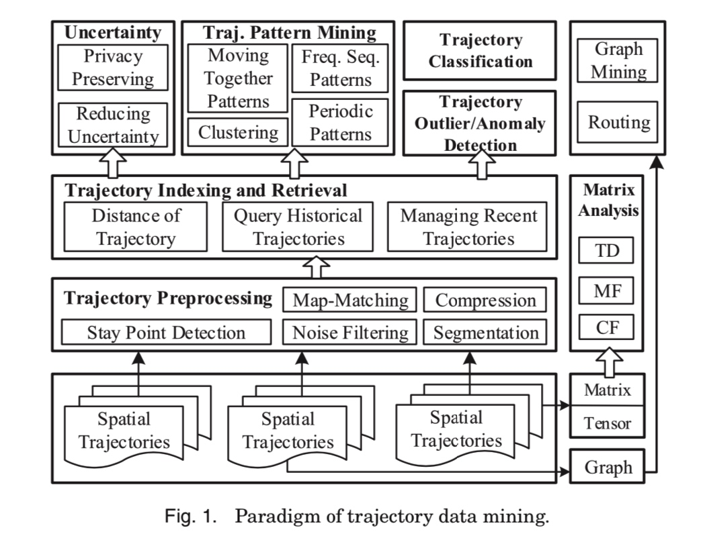

所属 Topic：轨迹分析 · 类型：专题资料
0.综述#
首先是关于整个轨迹数据涉及的存储、数据清洗、分析、挖掘的一个整体模块。

1 trajectory preprocessing#
GPS点漂移问题
http://www.xml-data.org/CHDLXX/html/62356297-1a5a-4b3f-bb57-547e9a401da0.htm
2 trajectory data management#
2.1 trajectory indexing和retrieval#
常见的检索类型有：
(1) range 检索： 检索在指定空间或时间内的轨迹
(2) KNN 检索：找到和指定轨迹或者点最近的k条轨迹
检索涉及到数据存储形式，可以看下原文，这里不细说了。
一般都是采用专门的GIS数据库进行存储和管理。
2.2 trajectory的距离/相似性#
详见 2 轨迹相似性度量
3.uncertainty in a trajectory#
(1) 减少不确定性
多条不确定性的路线合并=> 相对确定性的路线
(2) 将空间进行grids划分，将原本的轨迹点重新归属到新的单元格中，简化轨迹
4. trajectory pattern mining#
(1) moving together patterns#
move together pattern 主要是找到一组在一定时间内共同移动的物体。一般都是通过基于密度聚类的方法。
Jensen[2007] Continuous clustering of moving objects扩展了这种方法，使得在原来的距离的基础上增加了移动的方向、角度等因素。
(2) trajectory clustering#
根据前面的关于轨迹距离/相似度的定义，可以对轨迹进行聚类。在这之前一般都需要对轨迹数据进行一步的处理，比如切分segment。
（3）mining sequential patterns#
进行子序列模式挖掘，首先要定义序列中的location，即将(x,y)转为一个有标识性的概念，比如一个地点。方法：
- line simplification based 方法：比如先用DP方法识别出来key points。然后对每个轨迹的segment为一个item进行模式挖掘
- cluster based： 先把轨迹上的点，聚类到regions of interest，然后每条轨迹就可以用这些“关键点”来表示。
(4) periodical patterns#
5. trajectory classification#
一般来说，一个轨迹分类的过程大概是
(1)将轨迹切分成segment
(2) 提取特征
(3) 建立模型： As a trajectory is essentially a sequence, we can leverage existing sequence inference models, such as Dynamic Bayesian Network (DBN), HMM, and Conditional Random Field (CRF)
==> 可以看看相关论文
6. 轨迹异常检测#
7.把轨迹转成其他的形式#
(1) graph
- travel recommendation, 旅游的stay points, 然后研究图的联通，最大流之类的问题
- 计算user similarity。 通过更细粒度的停留点，以停留点为单位，每个人的轨迹就可以用停留点来刻画，即user1= (place1, place2, place3), user2 = (place1', place2', place3', place4')。然后可以进行user之间的相似度度量。
- (2) matrix
可以做travel recommendation。 比如 user-location矩阵，zheng[2010b]提出了一个coupled-MF的方法。构造了一个location-activity矩阵。
(3) tensor
user-location-activity。作者介绍了一种分解方法
8.常用的轨迹数据集#
public trajectory dataset
—GeoLife Trajectory Dataset [GeoLife Data]
—T-Drive Taxi Trajectories [T-Drive Data]
—GPS Trajectory with Transportation Labels
—Check-in Data from Location-based Social Networks [User check-in data]
—Hurricane Trajectories [Hurricane trajectory (HURDAT)]
—The Greek Truck Trajectories [The Greek Trucks Dataset]
—Movebank Animal Tracking Data [Movebank data]
基于轨迹特征的挖掘应用#
轨迹数据应用案例
https://www.jianshu.com/p/e78016feda12
一个挖掘案例
https://github.com/haicg/datamining-geolife-with-python
https://github.com/jbremz/Beijing-Trajectories-Project
这个项目本身是个分类的项目，通过各种轨迹特征来判断交通方式。其中有很多关于轨迹特征指标的设计可以借鉴(比如角度、面积。。。)
数据来源，微软GeoLife GPS Trajectories项目，https://www.microsoft.com/en-us/research/publication/geolife-gps-trajectory-dataset-user-guide/
https://chuansongme.com/n/1884212353776
研究paper：
Trajectory Clustering: A Partition-and-Group Framework，Jae-Gil Lee, Jiawei Han，Kyu-Young Whang
参考资料#
郑宇 https://www.microsoft.com/en-us/research/publication/trajectory-data-mining-an-overview/